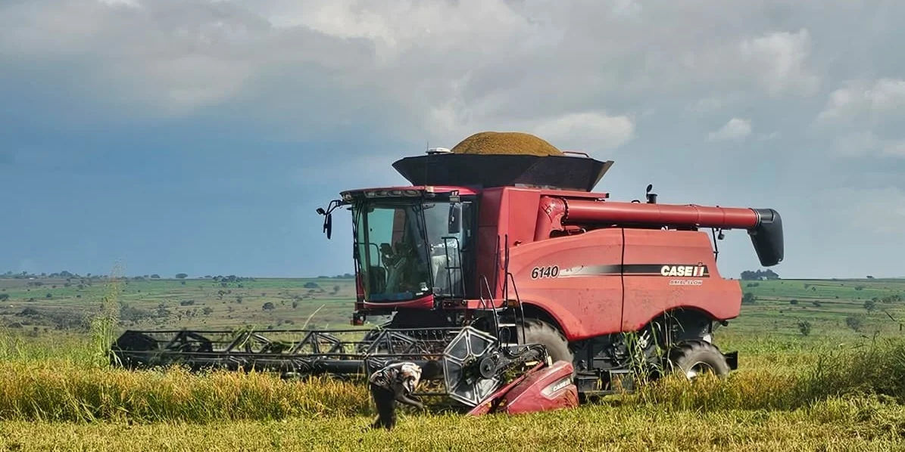
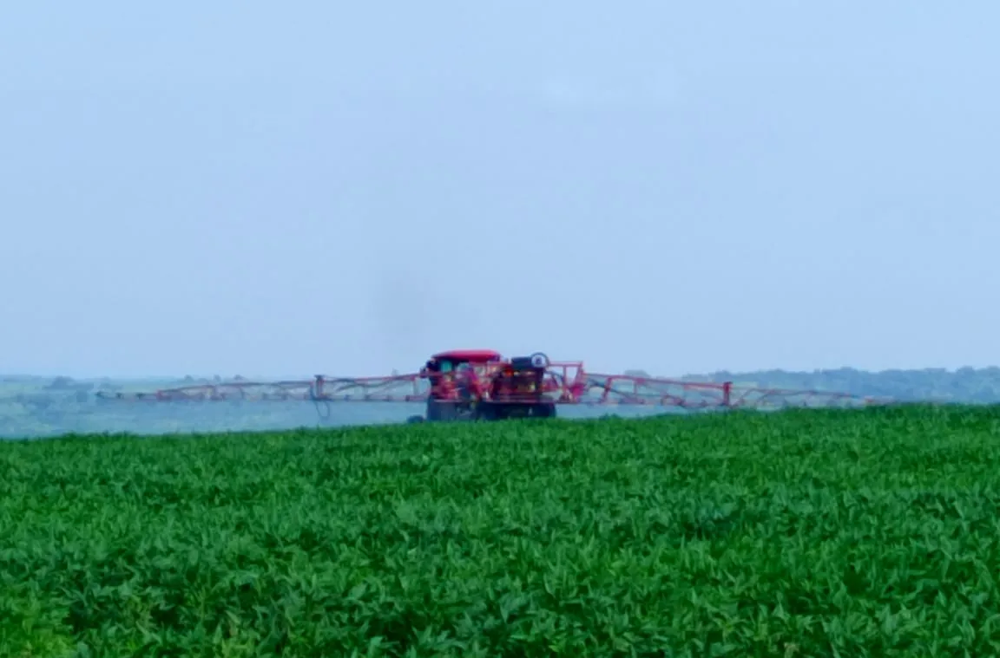
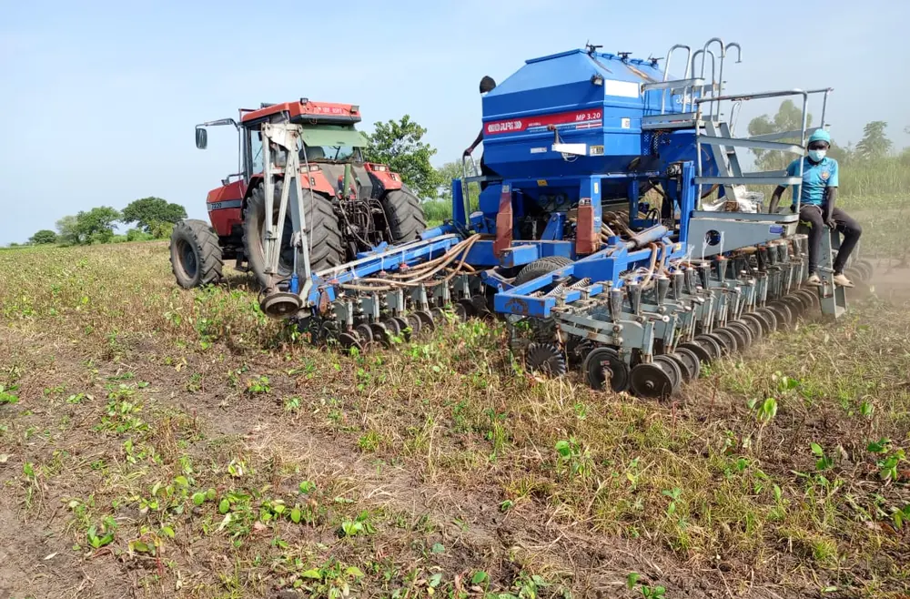
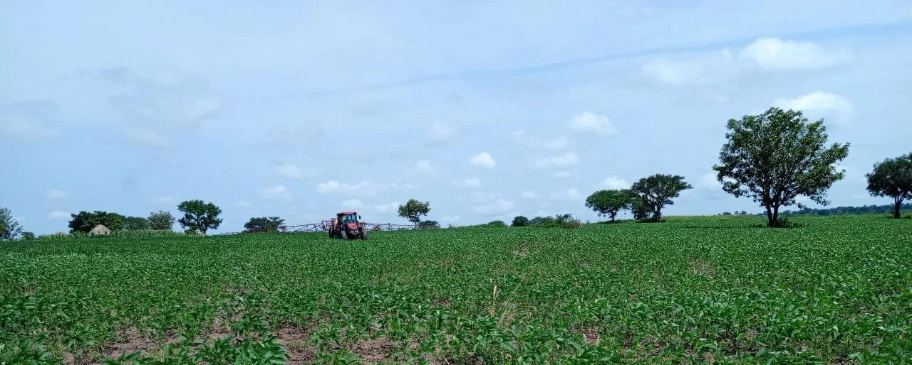
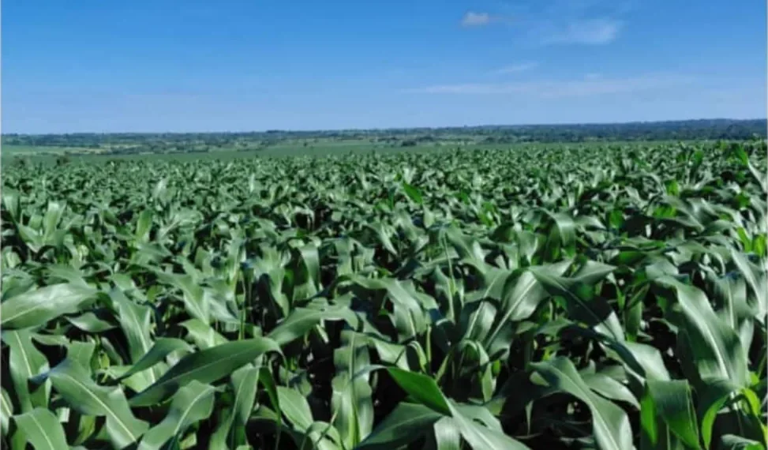
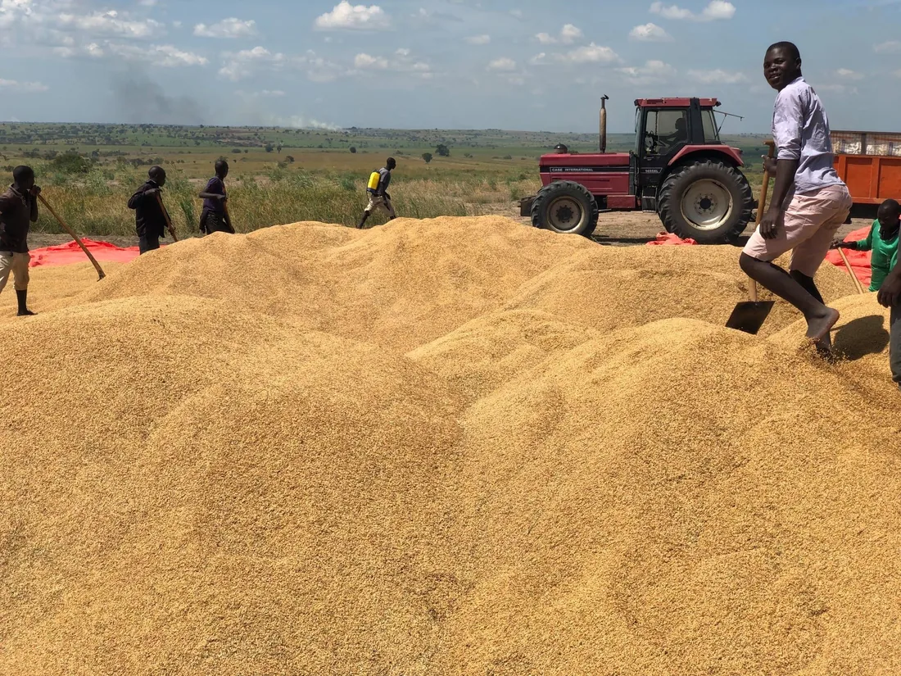
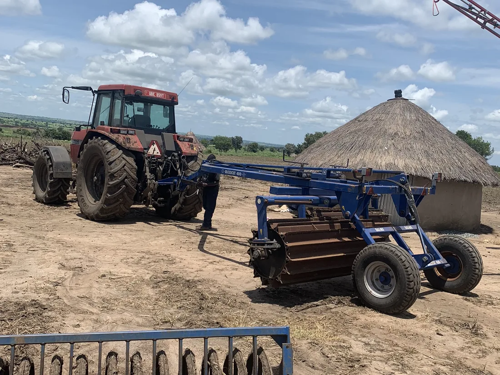
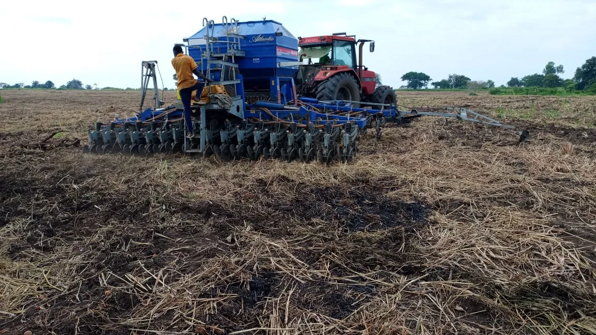
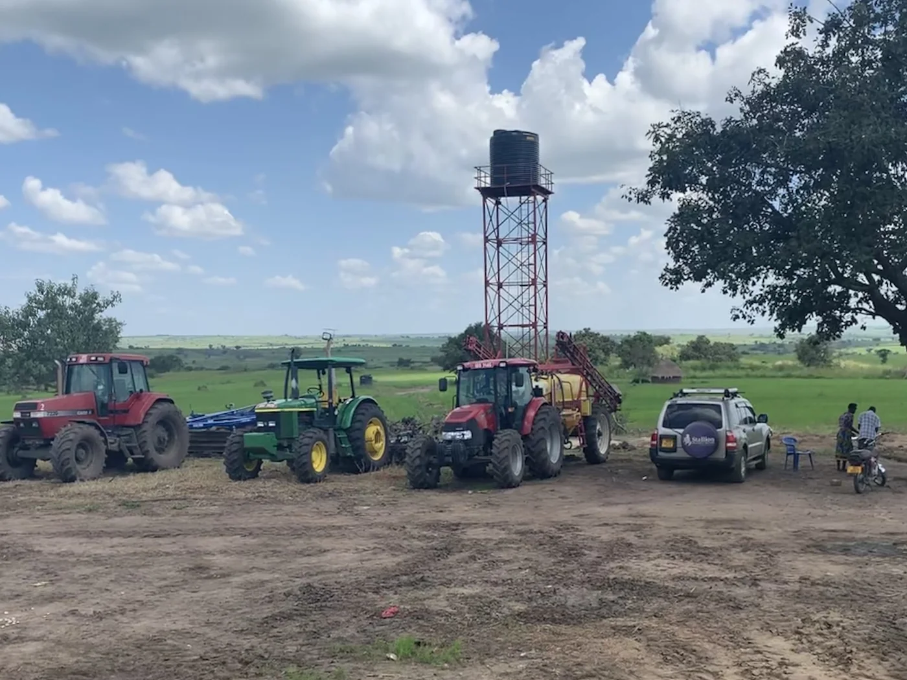
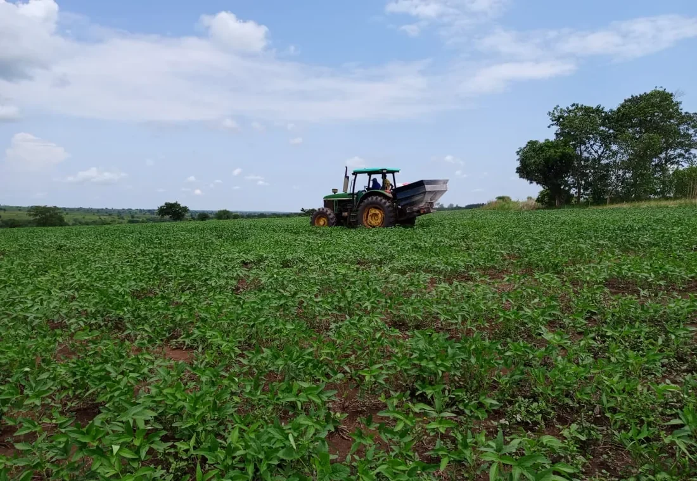

From our fields to global markets.
At Normah Agro Farm, we improve food security through the cultivation of Soybeans, Maize, Rice, Sesame, Sorghum and Millet on one mechanised farm in Amuru.
Six crops, not two.
Where many northern Uganda farms concentrate on maize and soya, Normah carries sesame and millet at equal weight — six crops across two seasons, on one farm.

Maize
Season A & BFeed and food grade, grown across both seasons.

Soya beans
Season A & BOilseed and feed markets, rotated with cereals.

Rice
Season BGrown in the wetter half of the year, borehole-supported.

Sesame
Season BAlso called simsim — part of Normah's six-crop breadth.

Sorghum
Season A & BDrought-tolerant cereal grown across both seasons.

Millet
Season AA traditional northern Uganda cereal in the rotation.


One farm, built by the people who run it.
Our founding directors are passionate about agriculture and heavily invested in mechanisation from cultivation to harvest.
Learn MoreOne farm. One team. Grain you can trace to the plot.
Three things buyers ask about first — where it's grown, who grows it, and whether it can be proven.
Not aggregated from thousands of smallholders
Most grain on the regional market is pooled from scattered farms of uneven quality. Normah's grain comes from a single mechanised operation at Bana Trading Centre, Amuru District — the same fields, season after season.
The same agronomists and operators, every season
Planting, spraying, harvest and handling are run by one on-farm team using the same equipment and the same records — not a rotating cast of contracted outgrowers.
A field record behind every bag
Field and plot records run from planting through to dispatch documentation, so a shipment can be traced back to where and when it was grown.
Quality, handling & traceability
Seed to storage: a season on the Amuru farm.

Mechanised at every stage, on our own equipment.

Mechanisation and training for smallholders nearby.
Alongside its own production, Normah offers consultancy to smallholders on mechanised farming practices, training and demonstration farming — with district pack houses planned for Masindi, Lira, Gulu and Amuru.

What buyers and growers ask us most.
What makes Normah's grain different?
It comes from one mechanised farm at Bana Trading Centre, Amuru — not pooled from thousands of smallholders — so every shipment traces back to the same fields, team and records.
Do you support smallholder farmers nearby?
Yes. Alongside its own production, Normah offers mechanisation consultancy, training and demonstration farming to smallholders near Amuru. See For growers.
How is quality and freshness handled?
Grain is cleaned, checked for moisture, graded and bagged before storage and dispatch. See the full chain on Quality, handling & traceability.
Can I place a wholesale or export order?
Yes — tell us the crop, volume and destination on the request a quote form and we'll follow up directly.

Season B updates from Amuru.
Season B planting is underway across the rice and sesame blocks
A short update on this season's planting sequence and the crops going into the ground first.
Inside the warehouse: how grain is cleaned, dried and stored
A walk through post-harvest handling at the 450 sqm warehouse.
A farmer training day on the Amuru fields
Notes from a mechanisation and agronomy training session for neighbouring smallholders.
Tell us what you need, and we'll follow up with a quote.
Company, crop and volume — that's all it takes to start.